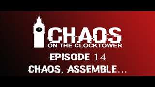

Bring a game together
Choose a fixed night or ask your players which dates work, then send each player the custom session link. Players never need to visit this sign-in page.
Plan the date, share one link, and see who can brave the town square. Players join without creating an account.
Learn how to use the systemChoose a fixed night or ask your players which dates work, then send each player the custom session link. Players never need to visit this sign-in page.
From choosing possible nights to gathering the final town—and watching the chaos afterwards—this guide shows every part of the site.
Create the session, add possible scripts, then share one memorable link.
Choose Continue with Google. Your dashboard keeps upcoming, date-poll and closed sessions together, with search and status filters for a long-running calendar.
Select I have a date to begin recruiting immediately, or I need to find a date to offer up to ten options for players to answer.
Enter all Storyteller names, the venue, capacity and event difficulty. Beginner events feature the three base scripts; Intermediate events may use more complex scripts; Advanced events may include homebrew or alternative game modes.
Copy the custom link from the session header and send it to your group. It opens the session directly—players do not need your dashboard or a Google account.
ravenswood-nightThe shared link contains everything a player needs.
Scripts appear before the date choices. Open any JSON script to see its Townsfolk, Outsiders, Minions, Demons and special characters, then return to choose dates.
Add a name and experience level for each person you are answering for. Fresh Blood is new or still learning; a Repeat Offender is comfortable with involved mechanics; a Criminal Mastermind can confidently interpret unfamiliar scripts and complex interactions, or has Storyteller experience. Then mark every date Available, Maybe or Unavailable.
Return using the same device and session link to correct player names or date responses. Players can only edit registrations created by their anonymous session—not anybody else’s.
The organiser turns the poll into a confirmed game and manages the final roster.
Available players determine the status: 0–4 means not enough yet, 5–6 enables Teensyville, and 7+ enables a Full Town game. Maybe never counts toward those thresholds.
Choose Confirm this date. Available players move automatically to the interested roster, Maybe players remain visibly unconfirmed, and the session advances to Find Players.
Organisers can add multiple players and remove players from their own sessions. Admins can manage every session and remove any event or player.
The complete video collection lives inside Chaos Planner.
Select Watch episodes in the header. Pick from the complete thumbnail library, then your chosen episode loads in the privacy-enhanced player without leaving Chaos Planner.

Episode 14Bluffs, betrayals and bodies in the town square. Choose any episode from the playlist and watch without leaving Chaos Planner.
Choose one of all 16 episodes. The newest sits at the top; every story plays here without leaving Chaos Planner.
Organisers and admins sign in with Google to create and manage sessions. Players never use this screen.